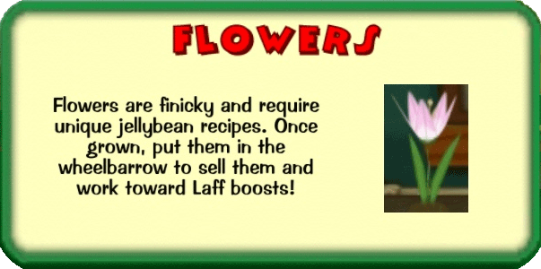
Planting:
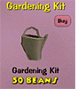
You can only plant flowers on the flower beds around your own house.
There are 10 slots available, when you have purchased a watering can
from Clarabelle's Cattlelog. The watering can and more gardening items
are available in your next Cattlelog after the release of the Toontown
Gardening update.
If you want to plant a flower, you need to enter that flower bed around
your house and find an empty slot for a flower. Click on .
This combination panel will show up:
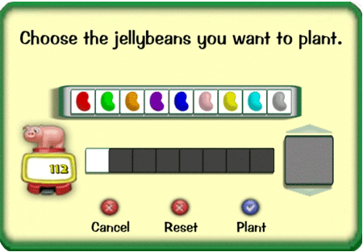
In your first attempt when planting flowers the following Jelly bean colors will lead to the appropriate types of flowers:
- green: Laff-o-dil
- orange: Dandy Pansy

- pink: What-in Carnation

- yellow: School Daisy

 cyan: Lily-of-the-Alley
cyan: Lily-of-the-Alley 
- red: not succesful
- violet: not succesful
- blue: not succesful
- silver: not succesful
After harvesting your first types and earning a shovel skill of 40 you
will be able to put more jelly beans into the above combination panel:
Respect the correct order of colors when putting in the jelly beans!
- green + cyan: Daffy Dill

- orange+ cyan: Chim Pansy

- pink + yellow: Instant Carnation

- yellow + red: Lazy Daisy

- cyan + green: Lily Pad

Once you have picked 80 flowers you can plant these combinations of three Jelly beans:
- yellow + red + green: Midsummer Daisy

- orange + red + red: Potsen Pansy

- red + red + red: Summer's Last Rose

- pink + red + red: Hybrid Carnation

- cyan + orange + orange: Tiger Lily
With a total of 160 picked flowers (Bronze Shovel Skill of 80) you can plant these combinations of four Jelly beans:
- yellow + red + cyan + orange: Freshasa Daisy

- cyan + orange + orange + pink: Livered Lily

- green + pink + yellow + yellow: Giraff-o-dil

- orange + yellow + yellow + red: Marzi Pansy

- red + yellow + orange + yellow: Corn Rose

With a total of 240 picked flowers (Steel Shovel) you can plant these combinations of five Jelly beans:
- yellow + red + orange + orange + orange: Whoopsie Daisy
- cyan + red + red + red + red: Chilli Lilly
- violet + red + blue + violet + violet: Onelip

- pink + red + green + blue + red: Side Carnation

- green + pink + blue + pink + pink: Time and half-o-dil

With 400 picked flowers (Silver Shovel Skill of 160) you can
put down these combinations of six Jelly Beans:
- cyan + red + violet + violet +
violet + violet: Silly Lily

-
violet + red + red+ red + violet + violet: Twolip

-
yellow + blue + cyan + violet + blue + blue: Upsy Daisy

-
red + pink + orange + red + orange + pink: Tinted Rose

-
orange + pink + pink + orange + blue + pink: Smarty Pansy
With 560 picked flowers (Gold Shovel) you can put down these combinations of seven Jelly Beans:
- red + cyan + orange + pink + violet + cyan + cyan: Stinking Rose

- cyan + violet + cyan + blue + cyan + blue + blue: Indubitab Lily

- yellow + green + red + orange + green + green + green: Crazy Daisy
- blue + violet + blue + violet + cyan + blue + blue: Car Petunia

- pink + grün + grün + grün + grün + gelb + grün: Model Carnation
With 880 picked flowers (Gold Shovel skill of 320) you can plant these combinations of eight Jelly Beans:
- red + blue + violet + violet + blue + blue + pink + blue: Istilla Rose

- blue + pink + pink + blue + red + orange + yellow + yellow: Platoonia

 cyan + blue + yellow + yellow + cyan + blue + yellow + yellow: Dilly Lilly
cyan + blue + yellow + yellow + cyan + blue + yellow + yellow: Dilly Lilly 
- yellow + blue + violet + cyan + violet + red + orange + violet: Hazy Dazy

- violet + yellow + yellow + violet + yellow + orange + violet + yellow: Threelip
These are all the combinations to flowers existing by now.
Further recipes will be listed here as soon as more flowers need to be discovered one day.
Every planting action will cost the amount of Jelly beans, which have been settled for the attempt.
So failed attempts will cost your Jelly beans! Jelly beans will be taken from your Jelly bean bank in your house if the Jelly bean jar your toon is carrying is empty.
Shovel skill can be obtained by picking a sprout. Every harvest leads to
+1 skill. Read more about watering, picking and earning shovel skill
here.
Flowers are always sprouting shortly past midnight (Pacific Standard
Time), even when they have planted and watered just a little before
that. However, you cannot watch them growing

.
Important: You should not forget to take care to
plant each Jelly Bean combination once at least. You do not earn skill
points for the lower amount of combos any more once you have reached the
next shovel skill level. So you will get thrown back in your progress
one day once you have to settle down a lower combo although you could
already plant the higher one.
From practical experience you should always put 10 plants at once, pick
them on the next day and sell them. Have a look into your flower album
on the first time whether you have 5 different species in there. Then
plant 10 new ones right away and don't forget to water them. Once you
reach the next combo level, you should have a look into your album again
once you have harvested and sold it on the wheel barrow. Check if you
find 5 new flowers and haven't overseen any combo.
You cannot see on the plant offspring which flower will grow from it.
But you can click on 'Remove' and will see this display of what plant
you are about to remove:
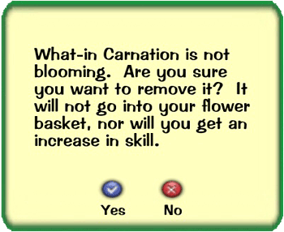
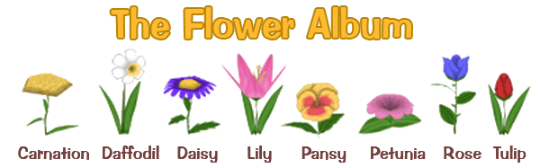
There are 40 species of flowers in eight categories. I'd like to show the complete different varieties known by now here:
Daisys:
(8 of 8 total)
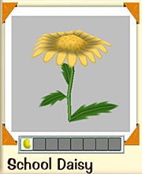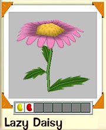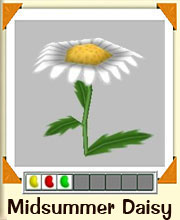
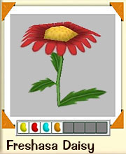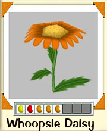

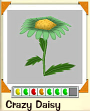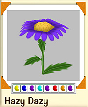
(3 of 3 total)
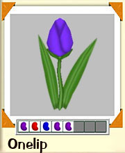

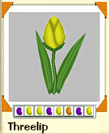
(5 of 5 total)
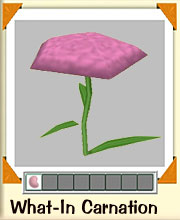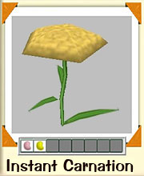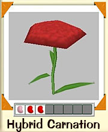
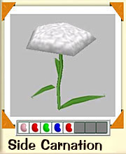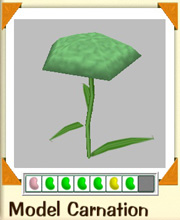
Lilys:
(8 of 8 total)
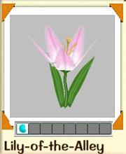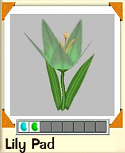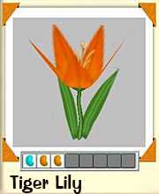
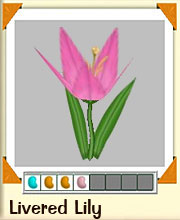

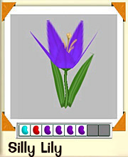
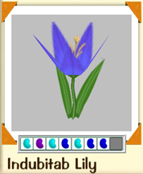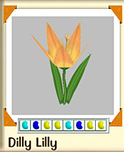
(4 of 4 total)
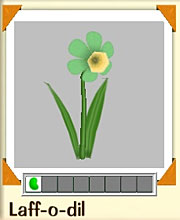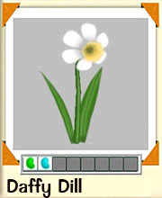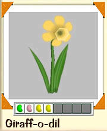
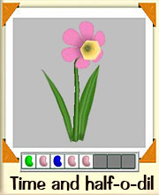
Pansys:
(5 of 5 total)
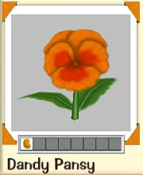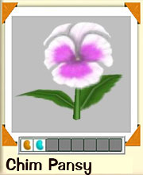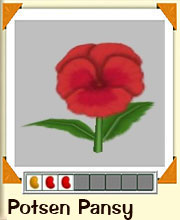
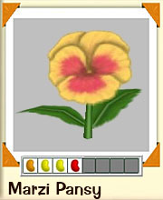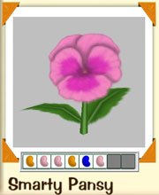
Petunias: (2 of 2 total)

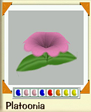
(5 of 5 total)
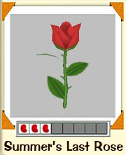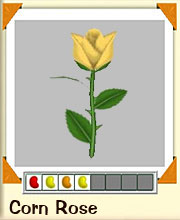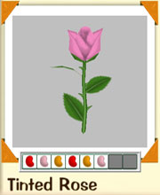
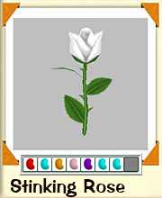 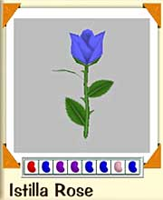
Please
note that the Jelly bean recipes shown underneath each blossom is
exactly needed to be planted to achieve the individual flower.
~~~~~~~~~~~~~~~~~~~~~~~
Total: 40 of 40 flowers known
~~~~~~~~~~~~~~~~~~~~~~~